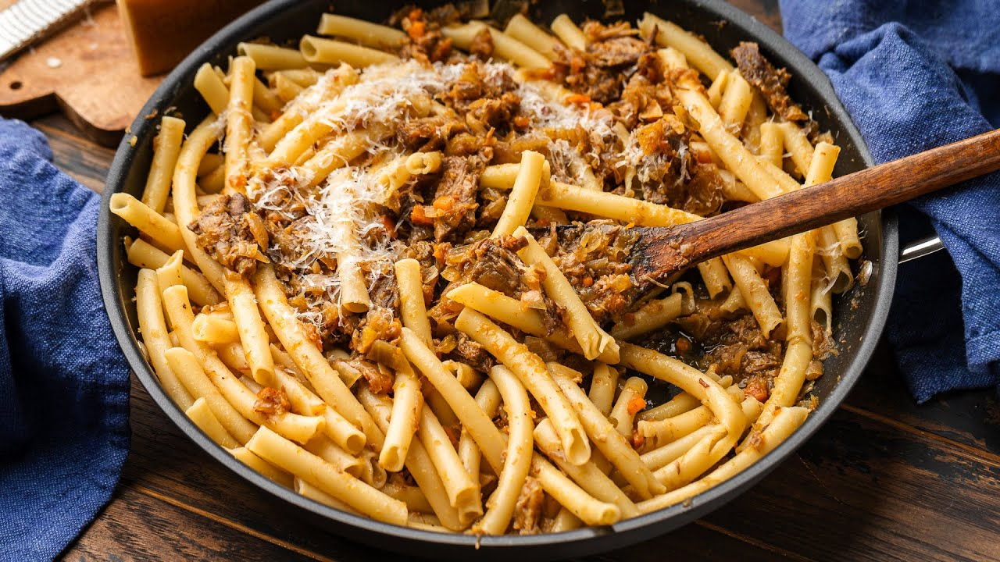

Naples' great onion-and-beef ragù, via Sip and Feast. Five pounds of onions collapse into a sweet, savory cream around slow-braised chuck — no tomatoes, no cream, just time.
Oven to 300°F. In a Dutch oven over medium heat, render the pancetta until its fat lets go; scoop it out, leave the fat.
Pat the chuck dry, season generously, and sear hard on all sides in the pancetta fat. Out to a plate with the pancetta.
Olive oil, carrot, celery, pinch of salt: cook about 10 minutes until fully soft. Then heat to high, pour in the wine, scrape up the fond, and reduce it by half.
Add all the onions — yes, all five pounds — the water, and a pinch of salt. Beef and pancetta back in, lid on, and into the oven for 3 hours, checking midway and adding water if it looks dry.
When the beef is fork-tender, lift it out and shred it. Meanwhile cook the onions uncovered over medium, 45–60 minutes, until creamy and lightly caramelized — splash in water or wine if they threaten to catch.
Shredded beef back into the onions. Taste, season, and hold at a low simmer.
Boil the pasta one minute short of al dente in salted water; reserve at least 2 cups of the water before draining.
In a large pan, finish the pasta in about 3 cups of ragù with splashes of pasta water until al dente and glossy. Off the heat, Parmigiano in, serve immediately. Leftover ragù freezes for 3 months.